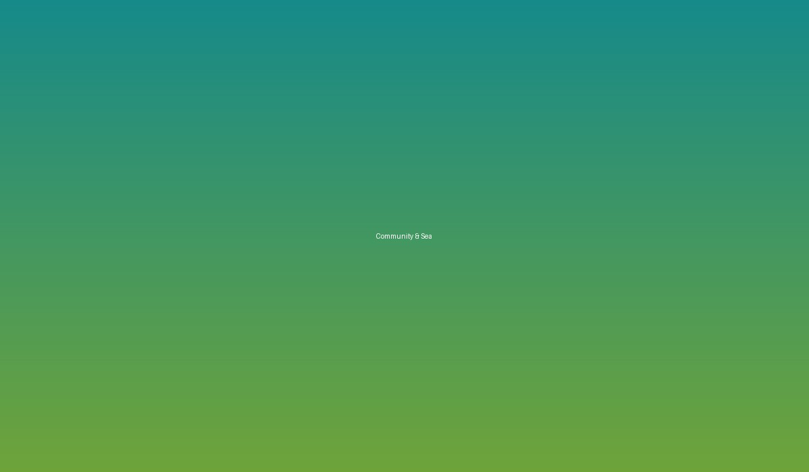

Komuniti
Berkembang Bersama
Menyertai, mempelajari, berkolaborasi dan membangunkan peluang melalui koperasi.
Bersama PAGUBA
Empat cara untuk berkembang bersama.
01
Menyertai
Menjadi sebahagian daripada ekosistem koperasi.
02
Mempelajari
Mendapat pendedahan dan pengalaman baharu.
03
Berkolaborasi
Membina jaringan dengan komuniti dan rakan strategik.
04
Membangunkan Peluang
Mencipta peluang ekonomi bersama.

Program Komuniti
Aktiviti yang dekat dengan komuniti.
PAGUBA memberi ruang untuk program perintis kampung, kebun rumah dan ekonomi kitaran komuniti.
Bincang Bersama →